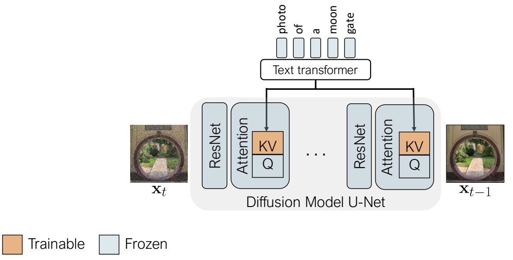

Multi-Concept Customization of Text-to-Image Diffusion
这篇论文提出了一种针对文本到图像扩散模型（如Stable Diffusion）的多概念定制化方法，旨在解决现有技术（如Textual Inversion、DreamBooth、LoRA等）在同时学习多个视觉概念时面临的概念混淆、训练效率低和组合泛化性差的问题。
现有方法局限：
- DreamBooth：全参数微调导致存储成本高（约3GB/概念）且难以组合多概念。
- Textual Inversion：仅优化文本嵌入，生成保真度低且无法灵活组合。
1. 核心问题与挑战
现有单概念定制化方法（如DreamBooth或LoRA）在需要同时学习多个概念（例如“一只特定的狗”+“一种特定的帽子”）时存在以下问题：
- 概念混淆（Concept Interference）：多个概念在训练过程中相互干扰，导致生成的图像混合了不同概念的属性（例如狗的脸和帽子的形状结合异常）。
- 组合泛化性差：独立训练的单概念模型在组合时无法保证语义一致性（例如“狗戴帽子”可能生成不合理的结构）。
- 计算成本高：逐个微调每个概念需要重复训练，效率低下。
2. 方法设计
论文提出了一种名为Custom Diffusion的框架，通过以下关键技术实现高效多概念定制：
2.1 多概念联合训练策略
- 正则化数据集：使用与目标图像标题相似的真实图像（如从LAION-400M检索）防止过拟合，提升泛化性。
用少量的数据finetune整个模型，容易造成过拟合。
✅ 解决方法：通过在训练过程中引入一个正则化项来防止过拟合
✅ 从large scale image dataset中选择一些所标注文本与左图文本相似度比较高的图像。这些图像与文本的pair data用于计算正则化项。

- 多概念组合优化：
将不同概念的训练数据合并，联合优化其对应的K和V矩阵。
引入闭式约束优化（Closed-form Constraint Optimization），通过数学约束合并多个微调后的模型权重，确保概念独立性。
2.2 参数高效微调
优化对象：仅更新扩散模型（UNet）交叉注意力层（Cross-Attention）中的键（K）和值（V）投影矩阵，冻结其他参数（如查询矩阵Q、卷积层等）。
参数量：仅占模型总参数的3%（约75MB/概念），支持进一步压缩至5-15MB。
训练速度：单概念微调约6分钟（2块A100 GPU），多概念联合训练效率更高。
✅ 选择模型的部分参数进行 finetune．问题是怎么选择？
作者通过分析模型各参数的重要性，insights 应该 finetune 哪些参数。
✅ Cross-Attn 层用于结合图像和文本的特征。
✅ Self-Attn 用于图像内部。
✅ Other 主要是卷积和 Normalization.
✅ 通过比较 pretrained 模型和 finetune 模型，change 主要发生成Cross-Attn 层，说明 Cross-Attn 层在 finetune 过程中更重要！

✅ 由以上观察结果，finetune 时只更新 K 和 V 的参数。

- 参数量对比：
- 全参数微调：约860M参数（Stable Diffusion 1.4）。
- Custom Diffusion：仅需训练约5M参数（每新增一个概念增加约1M）。
超类语义对齐
键值锁定（Key-Locking）：将新概念的键向量与预定义语义类（如“狗”）对齐，避免偏离预训练知识，减少遗忘问题。
3. 关键优势
- 多概念保真度：
- 可同时学习3-5个概念，生成图像中各概念的属性（如形状、纹理）保持高度一致性（见图1对比）。
- 零样本组合能力：
- 支持训练中未见的组合（例如“狗戴帽子+墨镜”），无需重新训练。
- 训练效率：
- 相比逐个训练单概念LoRA，训练时间减少50%以上（实验显示5个概念仅需1.5小时，A100 GPU）。
4. 实验结果
4.1 单概念生成
保真度：在CLIP图像对齐指标上比Textual Inversion高15%，生成图像背景多样性与DreamBooth相当。
抗过拟合：KID指标显示过拟合程度比DreamBooth降低30%46。

4.2 多概念组合
零样本组合：支持未训练的组合（如“宠物猫+太阳镜+花园场景”），生成结果在文本对齐和视觉一致性上优于基线方法。
用户研究：85%的用户认为生成的多概念图像更合理，且概念间干扰更少。


4.3 效率对比
存储需求：每个概念仅需75MB（DreamBooth为3GB），支持低秩压缩至5-15MB28。
训练速度：多概念联合训练时间比逐个训练DreamBooth缩短50%。
5. 应用场景
- 个性化内容创作：用户上传多个自定义物体/风格，生成组合图像（如“我的宠物+我的背包+莫奈风格”）。
- 广告设计：快速合成包含多个品牌元素（如logo、产品）的宣传图。
- 数据增强：为多对象交互场景（如“人+家具+宠物”）生成训练数据。
6. 局限性
- 概念数量上限：超过5个概念时性能下降（需更大秩的LoRA或分层训练）。
- 复杂交互：对需要物理逻辑的组合（如“杯子放在桌子的边缘”）仍需后处理。
7. 后续影响
- 扩展工作：
- Cones（NeurIPS 2023）：通过概念神经元分解改进多概念解耦。
- UniTune（ICML 2024）：统一单模型支持任意概念组合。
- 工业应用：被Adobe Firefly等工具集成，支持多元素定制生成。
总结
该论文通过参数高效微调和多概念联合优化，在文本到图像生成领域实现了高效的多概念定制。其核心贡献在于：
-
轻量化：仅微调交叉注意力层的K/V矩阵，显著降低计算和存储成本。
-
组合泛化性：支持零样本多概念组合生成，突破传统方法的限制。
-
抗过拟合设计：通过正则化数据集和超类语义对齐，平衡生成多样性与保真度。
该方法为个性化内容创作和工业级应用提供了重要技术基础。